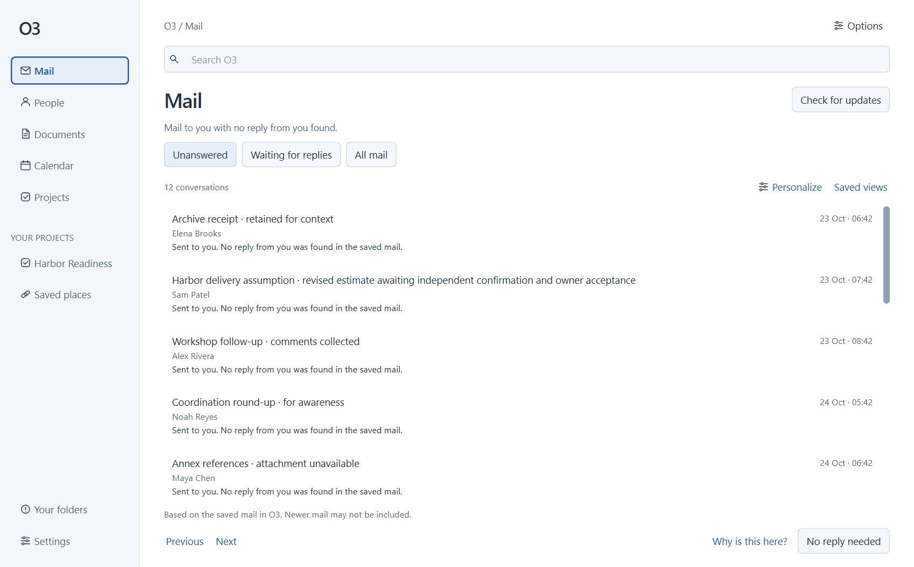
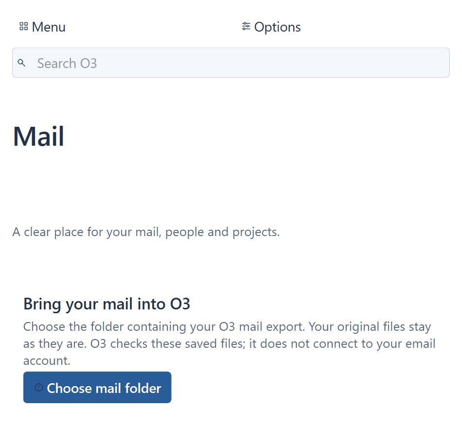
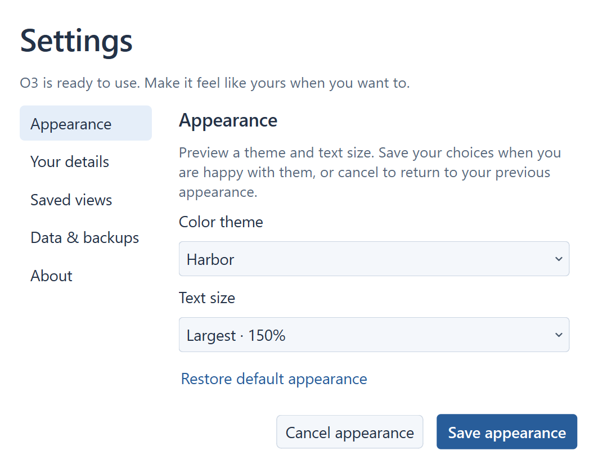
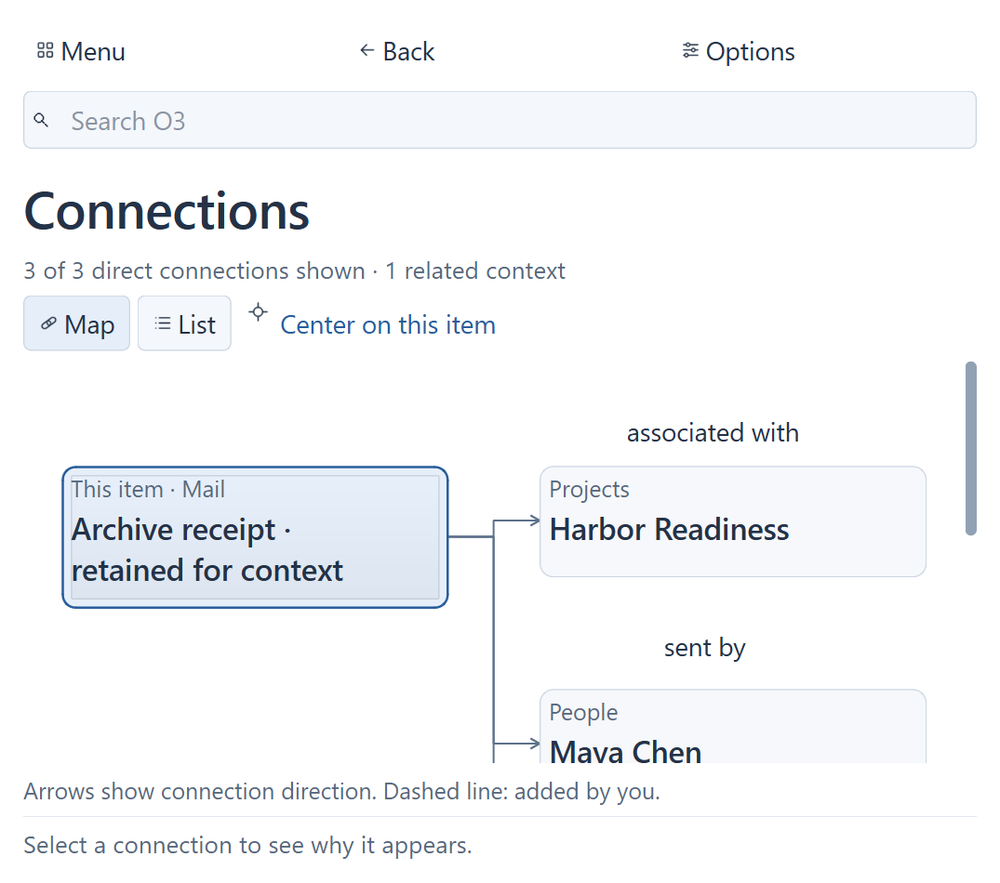
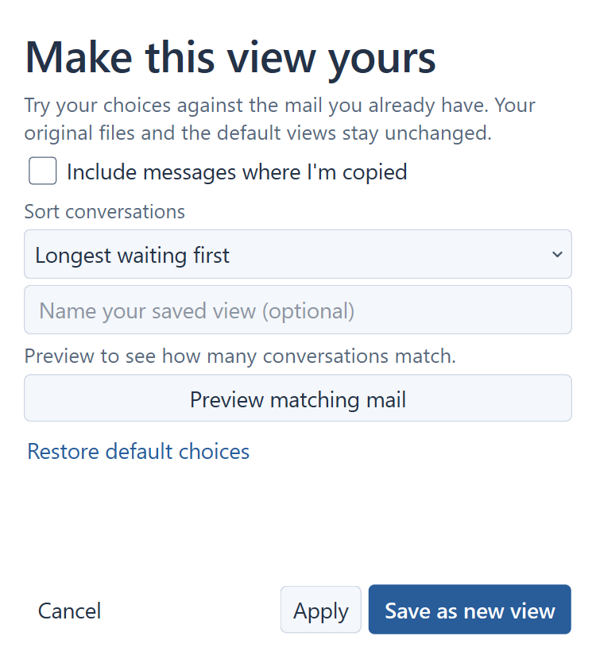
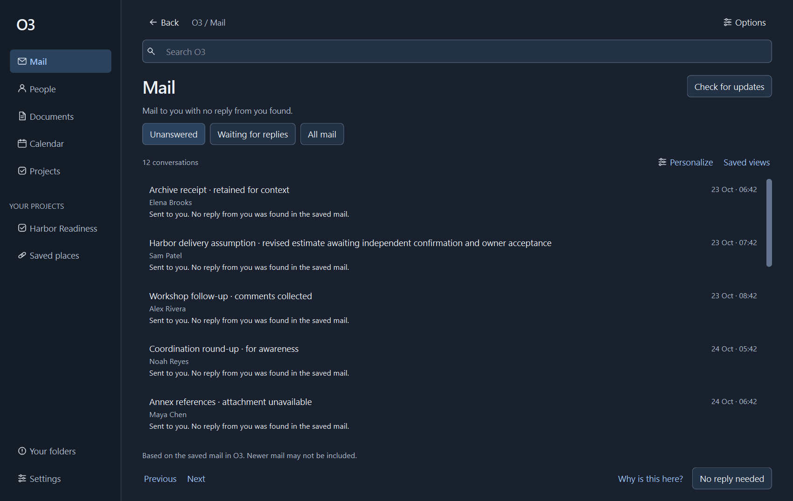
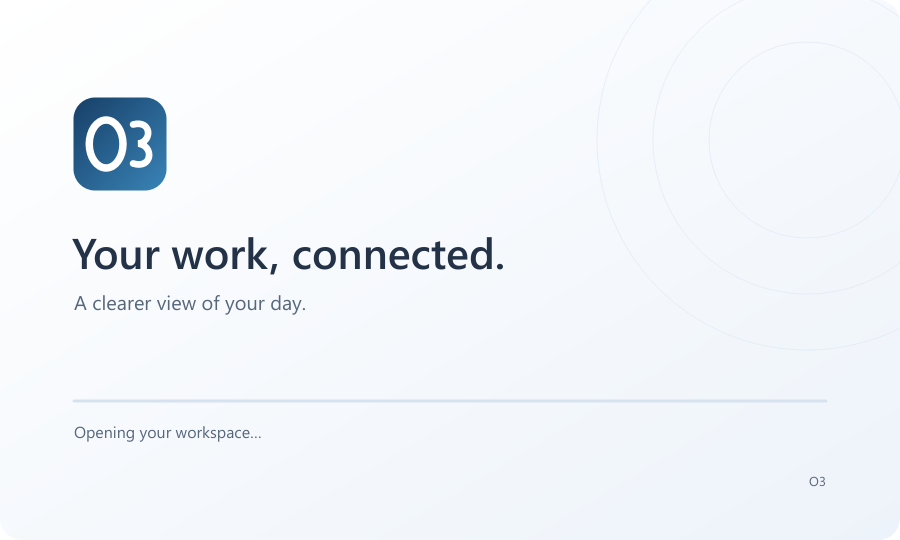

| Finding | Result | Status |
|---|---|---|
| D1 | Source and unsaved-preference notices stay visible independently; retry and recovery preserve the right state. | Verified |
| D2 | Toolbar layout fits narrow windows at 100%, 125% and 150% text. | Verified |
| D3 | Compact activation opens the reader; keyboard selection and Enter behave consistently. | Verified |
| D4 | Projects reconcile retained information immediately; a pending update has an explicit Retry action. | Verified |
| D5 | First use keeps the complete folder action reachable at enlarged text. | Verified |
| D6 | Long reader titles have an explicit, keyboard-accessible full-title view. | Verified |
| D7 | Dates use measured space and reflow; every long month name is tested. | Verified |
This is an application review build using the verified local Python/Qt environment. It does not replace the installed application.
Screen-reader qualification and production-data validation remain separate from the native keyboard, UIA, contrast and synthetic-data checks performed here.






